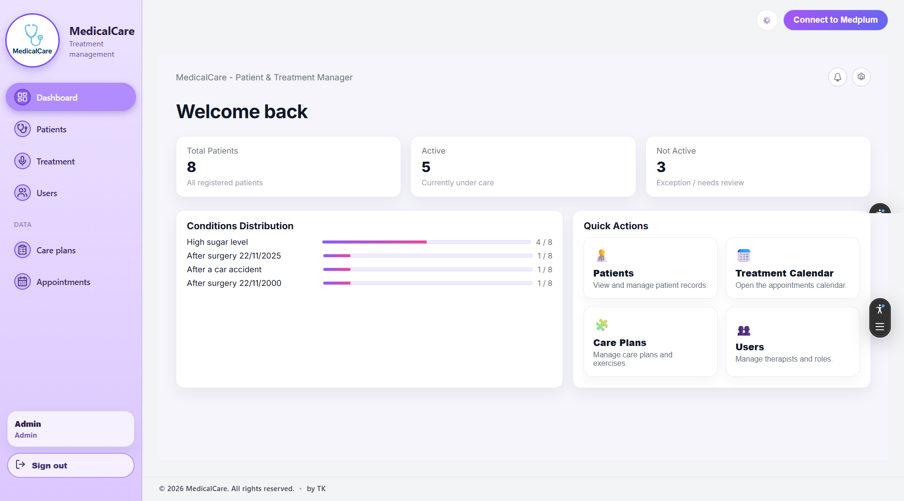

Live DemoMedicalCare - AI-assisted clinic management platform
HealthTech product for therapists and clinical workflows
MedicalCare helps therapists manage patient records, intake workflows, treatment documentation, appointment scheduling, and video-based progress tracking.
The product includes privacy-aware AI summaries, Hebrew/English support, RTL layout, and structured data flows built around real therapist workflows.
- Patient and treatment workflow management
- AI-assisted clinical summaries
- Appointment scheduling and patient history
- Video-based progress tracking